4.9 Bond order analysis¶
Multiwfn manual, p.617–633. Images:
../imgs/.
evaluated in the aforementioned way are reasonable.
4.9 Bond order analysis¶
In this section I will illustrate how to use Multiwfn to perform different kinds of bond order analyses to characterize chemical bonds.
4.9.1 Mayer bond order and fuzzy bond order analysis on acetamide¶
This instance exemplifies how to calculate Mayer bond order and fuzzy bond order for acetamide. Related theories have been introduced in Sections 3.11.1 and 3.11.6, respectively. Finally, I introduce a skill, namely labelling the calculated bond orders to molecular structure map by means of GaussView, so that you can examine bond orders easier.
Calculation of Mayer bond order We first calculate Mayer bond order. Note that calculating Mayer bond order requires basis function information, thus currently .mwfn/.fch/.molden/.gms file must be used as input file.
Boot up Multiwfn and input: examples\CH3CONH2.fch
Multiwfn session
- 9 — Bond order analysis
- 1 — Calculate Mayer bond order Immediately you get below output:
Bond orders with absolute value >= 0.050000
## 1: 1(C ) 2(H ) 0.93802674
## 2: 1(C ) 3(H ) 0.93473972
## 3: 1(C ) 4(H ) 0.94494566
## 4: 1(C ) 5(C ) 0.96585484
## 5: 5(C ) 6(O ) 1.90392771
## 6: 5(C ) 7(N ) 1.11849509
## 7: 6(O ) 7(N ) 0.07620305
## 8: 7(N ) 8(H ) 0.83250273
## 9: 7(N ) 9(H ) 0.83869874
Total valences and free valences defined by Mayer:
Atom 1(C ) : 3.77555991 0.00000000
Atom 2(H ) : 0.93147308 0.00000000
Atom 3(H ) : 0.92778456 0.00000000
Atom 4(H ) : 0.93657474 0.00000000
Atom 5(C ) : 3.97788022 0.00000000
Atom 6(O ) : 2.05925868 0.00000000
Atom 7(N ) : 2.85041375 0.00000000
Atom 8(H ) : 0.86522064 0.00000000
Atom 9(H ) : 0.85875080 0.00000000
By default, only the bond order terms larger than specific criteria will be outputted, the criteria can be adjusted in "bndordthres" in settings.ini. Mayer bond order often coincides with empirical bond order well. In this example, bond order between C5 and O6 is 1.9, which is very close to ideal value 2.0 (double bonds).
Total valence of an atom is the sum of Mayer bond orders that it formed. Free valence of an atom measures its remained capacity to form new bonds by sharing electron pairs, for closed-shell this quantity is always zero.
Then if you choose "y", entire bond order matrix will be outputted to bndmat.txt in current folder.
Orbital occupancy-perturbed Mayer bond order analysis Next, we want to try to find which orbitals have main contributions to Mayer bond order between C5 and O6, calculating the so-called "Orbital occupancy-perturbed Mayer bond order" is useful for realizing this goal. Hence, we select option 6 in bond order analysis module, and then input 5,6. The following information will be outputted:
Mayer bond order before orbital occupancy-perturbation: 1.903928
Orbital Occ Energy Bond order Variance
1 2.00000 -19.10356 1.906089 0.002162
2 2.00000 -14.34920 1.903934 0.000006
3 2.00000 -10.28192 1.905514 0.001586
4 2.00000 -10.18447 1.903939 0.000011
5 2.00000 -1.03758 1.606912 -0.297016
6 2.00000 -0.90529 1.825661 -0.078267
7 2.00000 -0.73868 1.872011 -0.031917
8 2.00000 -0.58838 1.896333 -0.007594
9 2.00000 -0.54103 1.868127 -0.035801
10 2.00000 -0.46630 1.799351 -0.104576
11 2.00000 -0.44722 1.512533 -0.391394
12 2.00000 -0.40158 1.830827 -0.073101
13 2.00000 -0.39610 1.659075 -0.244853
14 2.00000 -0.36742 1.393122 -0.510805
15 2.00000 -0.26611 1.743383 -0.160545
16 2.00000 -0.24383 1.796157 -0.107770
Summing up occupancy perturbation from all orbitals: -2.03987
From the output we can know that, for example, if the two electrons are removed from orbital 15, then Mayer bond order between C5 and O6 will be decreased from 1.903928 to 1.743383 (i.e. 1.903928-0.160545), we can also say that the contribution from orbital 15 is 0.160545. The sum of contributions from all occupied MOs is 2.03987, the reason that this value is not equal to 1.903928 is that Mayer bond order is not a linear function of density matrix, we do not need to concern about this.
Orbital 14 has the largest negative value of orbital occupancy-perturbed Mayer bond order, therefore this orbital must be greatly beneficial to the bonding. This conclusion can be further testified by visual inspection of the orbital isosurface, see the graph given at the end of Section 4.8.1. As expected, this orbital shows strong character of π-bonding between C5 and O6.
Calculation of fuzzy bond order Now we calculate fuzzy bond order. Unlike Mayer bond order, fuzzy bond order does not rely on basis function, therefore you can also use such as .wfn/.wfx as input file. Calculating fuzzy bond order is more time consuming than Mayer bond order, its advantage over Mayer bond order is that the basis set sensitivity is greatly reduced, and using diffuse basis functions will never deteriorate result.
In the bond order analysis menu, we select "7 Fuzzy bond order analysis", the result will be printed, as shown below
Bond orders with absolute value >= 0.050000
## 1: 1(C ) 2(H ) 0.89666213
## 2: 1(C ) 3(H ) 0.89075146
## 3: 1(C ) 4(H ) 0.88888051
## 4: 1(C ) 5(C ) 1.08050669
## 5: 1(C ) 6(O ) 0.13600686
## 6: 1(C ) 7(N ) 0.11096284
## 7: 3(H ) 5(C ) 0.05357850
## 8: 5(C ) 6(O ) 2.00411901
## 9: 5(C ) 7(N ) 1.40339002
## 10: 6(O ) 7(N ) 0.24523041
## 11: 7(N ) 8(H ) 0.87233783
## 12: 7(N ) 9(H ) 0.88243512
Comparing the result with that of Mayer bond order, you will find the results of both types of bond orders are very similar, in fact this is the common case. However, for highly polar bonds their results may deviate with each other relatively evidently.
Skill: Labelling bond orders on molecular structure map by GaussView
If you have GaussView (version ≥ 6.0), you can use it to show the bond orders calculated by Multiwfn on the molecular structure map to facilitate examining their values. Here I use Mayer bond order of acetamide as instance to illustrate this point.
Boot up Multiwfn and input examples\CH3CONH2.fch
Multiwfn session
- 9 — Bond order analysis
- 1 — Calculate Mayer bond order y
Multiwfn session
- Return to main menu 1000 — Hidden main function
- 13 — Convert the bndmat.txt in current folder to Gaussian .gjf file with bond order information Now we have gau.gjf in the current folder, which not only contains present molecular coordinate, but also contains bond orders between the connected atoms (the connectivity is automatically guessed based on current geometry, unless you employ a file containing connectivity information as input file, such as .mol and .mol2, see Section 2.5 for detail).
Load the gau.gjf into GaussView, select "Results" - "Bond Properties", then after proper adjustments, you can obtain below effect.
As can be seen, we also requested GaussView to use different colors to exhibit the bond orders. The more green the color, the larger the bond order; the redder the color, the smaller the bond order.
4.9.2 Multi-center bond order analysis on Li6 cluster and phenanthrene
The electron structure character of complex systems, such as cluster or system containing wide range electron delocalization is hard to be investigated by simple chemistry empirical rules, we have to resort to wavefunction analysis methods. In this section, examples of applying multi-center bond order to reveal multi-center interaction are given. If you are not familiar with multi-center bond order, please check Section 3.11.2 to gain basic knowledge. Notice that multi-center bond order analysis requires basis function information, therefore you have to use .mwfn/.fch/.molden/.gms file as input file.
Part 1: Studying three-center bond in Li6 cluster In the planar Li6 cluster, as shown in the map below, there are two kinds of three-membered rings, namely the three boundary ones and the central one. We will use multi-center bond order to study which kind of three-membered ring is more stable.
Boot up Multiwfn and input following commands examples\Li6.fch
Multiwfn session
- 9 — Bond order analysis
- 2 — Multi-center bond order analysis
- 1,3,4 — Indices of the atoms in the boundary three-member ring The output is
The multicenter bond order: 0.1247848038
The normalized multicenter bond order: 0.4997129069
Then we calculate three-center bond order of the central three-member ring, therefore we input 1,2,3, the result is
The multicenter bond order: 0.0351782167
The normalized multicenter bond order: 0.3276608901
Since the number of atoms in both the rings is the same, you only need to compare their "The multicenter bond order" values. The data are marked in the graph below. The pink texts denote Mayer bond orders.
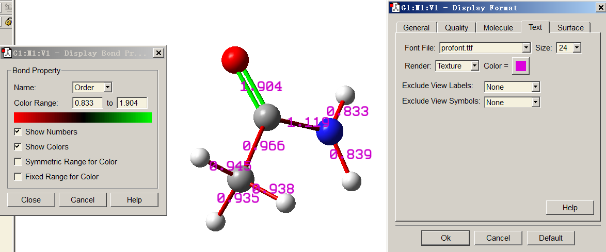
From the three-center bond order values, it is evident that the boundary three-member rings are more stable (i.e. more strongly binded) than the central one, this conclusion is also somewhat reflected by the Mayer bond orders. We can further demonstrate this conclusion by plotting LOL graph in the cluster plane (see Section 4.4.2 on how to plot this kind of map)
It is clear that electrons tend to localize in the boundary three-membered rings to stabilize them, the conclusion of this real space function analysis is in good agreement with the bond order analysis. By checking Laplacian map, ELF map, electron density deformation and valence electron density map, you can draw exactly the same conclusion.
The Li6.fch used in this example was produced at B3LYP/6-31G* level. Usually diffuse functions should be employed for properly describing anionic systems, in this case you should
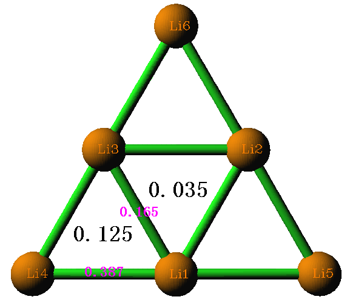
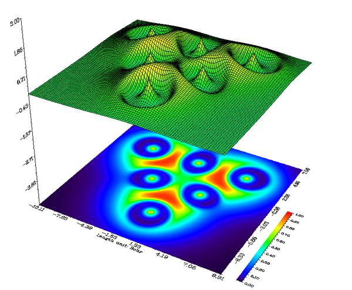
evaluate the multi-center bond order based on natural atomic orbitals (NAO) rather than based on original basis functions as illustrated above, otherwise the result may be completely useless, see Section 3.11.2 for detail (also see Part 3 of this section for example). Alternatively, you can remove diffuse functions and perform single point task to generate the wavefunction used for multi-center bond order analysis, however the basis set should be at least three-zeta quality, e.g. 6-311G(2d,p) or def2-TZVP.
Part 2: Studying six-center conjugation in phenanthrene The examples\phenanthrene.fch contains wavefunction of phenanthrene generated at B3LYP/6-31G* level. The atomic numbering is shown below. In this instance, we will use multi-center bond order to study which six-membered ring has stronger multi-center conjugation effect.
Boot up Multiwfn and input following commands examples\phenanthrene.fch
Multiwfn session
- 9 — Bond order analysis
- 2 — Multi-center bond order analysis
- 1,2,3,4,5,6 — Indices of the atoms in the boundary ring. Note that the inputting order must be in consistency with atomic connectivity, namely inputting such as 1,3,5,6,4,2 will be meaningless
The output is
The multicenter bond order: 0.0593516368
The normalized multicenter bond order: 0.6245570525
Note: It is worth to mention that in this case if you input the atomic indices in reversed order, namely 6,5,4,3,2,1, the result will be different, namely 0.0591177129. However, since the difference between 0.05935 and 0.05911 is marginal, we do not discrminate them. More information about influence of input order is mentioned Section 3.11.2
Next, we study the case of the central ring. We input 3,4,8,9,10,7, the result is
The multicenter bond order: 0.0264989378
The normalized multicenter bond order: 0.5460152146
Clearly, the central ring has weaker electron conjugation character than the boundary one, consequently we can also conclude that the boundary rings have stronger aromaticity. In Section 4.14.3, 4.15.2 and 4.25.6 we will further investigate the ring aromaticity by means of other analysis methods.
Note that the data of "The normalized multicenter bond order" can be compared between rings with different number of atoms. Since this value of boundary six-membered ring of phenanthrene is 0.6245, while that of the boundary three-membered ring of Li6 cluster is 0.4997, we can infer that the multi-center interaction in the former case may be more prominent.
Part 3: Calculate six-center bond order based on natural atomic orbitals (NAOs) In Multiwfn, multi-center bond order can also be calculated based on natural atomic orbitals (NAOs), as introduced in Section 3.11.2. The main advantage of using NAO as basis over the

common case is that reasonable result can still be obtained even diffuse functions are presented.
Here we calculate multi-center bond order in NAO basis for the phenanthrene, in this case NBO output information with DMNAO keyword is required. The Gaussian input file involved in this example is exampes\phenanthrene_DMNAO.gjf, the corresponding output file is examples\phenanthrene_DMNAO.out. As you can see from the .gjf file, the NBO module embedded in Gaussian is invoked and DMNAO keyword is passed into NBO module.
Boot up Multiwfn and input examples\phenanthrene_DMNAO.out
Multiwfn session
- 9 — Bond order analysis
- -2 — Multi-center bond order analysis in NAO basis
- 1,2,3,4,5,6 — Calculate six-center bond order for the boundary ring The output is
The multicenter bond order: 0.0588977456
The normalized multicenter bond order: 0.6237584547
As can be seen, the result is almost completely identical to the one we obtained earlier using option 2 in main function 9, it is expected since currently diffuse functions are not employed.
4.9.3 Calculate Laplacian bond order (LBO)¶
The Laplacian bond order (LBO) was proposed by me in J. Phys. Chem. A, 117, 3100 (2013), see Section 3.11.7 for detail. LBO is very suitable for organic system and has close correlation with bonding strength. Let us calculate LBO for C-C bond of ethane, ethene and acetylene.
Boot up Multiwfn and input following commands:
Multiwfn session
- examples\ethane.wfn — Optimized and produced at B3LYP/6-31G**
- 9 — Bond order analysis
- 8 — Laplacian bond order
You will see the result:
The bond order >= 0.050000
## 1: 1(C ) 2(H ): 0.887111
## 2: 1(C ) 3(H ): 0.889492
## 3: 1(C ) 4(H ): 0.889492
## 4: 1(C ) 5(C ): 1.059879
## 5: 5(C ) 6(H ): 0.887111
## 6: 5(C ) 7(H ): 0.889492
## 7: 5(C ) 8(H ): 0.889492
As you can see, LBO is very close to formal bond order (1.0) for C-C and C-H. LBO only reflects covalent bonding character, due to C-H is a weakly polar bond, the value is slightly smaller than 1.0.
Then use examples\ethene.wfn to calculate LBO for ethene
## 1: 1(C ) 2(H ): 0.919443
## 2: 1(C ) 3(H ): 0.919443
## 3: 1(C ) 4(C ): 2.022583
## 4: 4(C ) 5(H ): 0.919443
## 5: 4(C ) 6(H ): 0.919443
Then calculate LBO for acetylene by using examples\C2H2.wfn
## 1: 1(C ) 2(H ): 0.958393
## 2: 1(C ) 3(C ): 2.767449
## 3: 3(C ) 4(H ): 0.958393
The LBO of the C-C bonds in the three systems are 1.060, 2.022 and 2.767, the ratio is 1:1.907:2.61. It is known that the ratio of the bond dissociation energy (BDE) of the three bonds is 1:1.85:2.61. Clearly, LBO has surprisingly good correlation with BDE, in other words, LBO exhibits bonding strength fairly well (no other bond order definitions have so close relationship with BDE in comparison with LBO)
Moreover, LBO predicts that the sequence of the C-H bonding strength in the three systems is acetylene (0.958) > ethene (0.919) > ethane (0.889), this is completely in agreement with the experimental BDE sequence! (Other bond order definitions, such as Mayer bond order, fail to reproduce this sequence)
Finally, calculate LBO for O-H bond in water by using examples\H2O.fch, the result is 0.638. This value is significantly smaller than the C-H bond order, reflecting that O-H bond is much more polar than C-H bond.
4.9.4 Decomposition analysis of Wiberg bond order in NAO basis for formaldehyde¶
This example briefly illustrates a unique feature of bond order analysis module of Multiwfn, namely decomposing Wiberg bond order to atomic orbital pair and atomic shell pair contributions. A very simple molecule formaldehyde will be used as example, of course you can extend the analysis to much more complicated systems. Please read Section 3.11.8 first to understand basic idea of this analysis method.
This analysis requires natural atomic orbital (NAO) information and density matrix in NAO basis outputted by Weinhold's NBO program. For Gaussian user, you can run examples\H2CO_DMNAO.gjf and use the corresponding output file (examples\H2CO_DMNAO.out) as input file for this analysis. The orientation of the H2CO molecule in Cartesian system is shown in the graph below.
Boot up Multiwfn and input below command: examples\H2CO_DMNAO.out
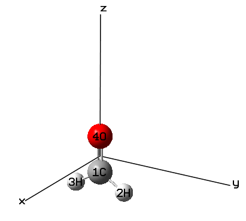
Multiwfn session
- 9 — Bond order analysis
- 9 — Decompose Wiberg bond order in NAO basis Then you can input two atom indices to obtain their Wiberg bond order calculated under NAO basis, and meantime obtain major components (the threshold for printing components is controlled by "bndordthres" parameter in
settings.ini). For example, we input 1,4, below result is immediately shown on screen:
Contribution from NAO pairs that larger than printing threshold:
Contri. NAO Center NAO type NAO Center NAO type
0.0823 2 1(C ) Val( 2S) S --- 21 4(O ) Val( 2S) S
0.1907 2 1(C ) Val( 2S) S --- 28 4(O ) Val( 2p) pz
0.9145 5 1(C ) Val( 2p) $p_x$ --- 24 4(O ) Val( 2p) px
0.0658 7 1(C ) Val( 2p) py --- 26 4(O ) Val( 2p) py
0.2482 9 1(C ) Val( 2p) pz --- 21 4(O ) Val( 2S) S
0.3700 9 1(C ) Val( 2p) pz --- 28 4(O ) Val( 2p) pz
Contribution from NAO shell pairs that larger than printing threshold:
Contri. Shell Center Type Shell Center Type
0.0823 2 1(C ) 2S --- 2 4(O ) 2S
0.1907 2 1(C ) 2S --- 5 4(O ) 2p
0.2482 5 1(C ) 2p --- 2 4(O ) 2S
1.3504 5 1(C ) 2p --- 5 4(O ) 2p
Total Wiberg bond order: 1.9161
From above information, the detail of total Wiberg bond order of 1.9161 becomes quite clear. According to the molecular graph shown earlier, the \(p_x\) type of NAO corresponds to the 2p atomic
orbital perpendicular to molecular plane, thus the \(p_x\)-px mixing results in π bond, its contribution to the total bond order (0.9145) is close to unity, which is in line with chemical intuition. The 2s-2s interaction only has weak contribution to the C=O bond, since the value 0.0823 is almost negligible; the reason should be attributed to the fact that the orbital overlap is insufficient. In addition, the \(2p\)-2py interaction also plays insignificant role, the contribution is merely 0.0658. The interaction between 2s(C)-2pz(O), 2pz(C)-2pz(O) and 2pz(C)-s(O) have remarkable contribution to total bond order, which are 0.1907, 0.3700 and 0.2482, respectively, and the sum reaches as high as 0.8089. The large contributions must mainly stem from good orbital overlapping.
In order to facilitate discussion, the program also outputs contribution to Wiberg bond order from various atomic shell pairs. For example, as you can see from above information, interaction between all 2p orbitals of carbon and all 2p orbitals of oxygen totally contributes 1.3504 of bond order.
In this function you can also input -1 to define two fragments, then contributions from shell interactions between the two fragments will be given. For example, we want to study the nature of interaction between the CO fragment and the two H atoms, in the present function you should input
Multiwfn session
- -1 — Decompose interfragment Wiberg bond order
- 1,4 — Atoms in fragment 1
- 2,3 — Atoms in fragment
Now you can see
Interfragment bond order analysis:
Contribution Fragment 1 Fragment 2
0.66301 2s 1s
1.27591 2p 1s
Interfragment Wiberg bond order: 1.9575
Clearly, the CO moiety mainly uses its 2p shells to form covalent bond with the two H atoms, while 2s shells of this fragment also play a nonnegligible role.
4.9.5 Study orbital contributions to Mulliken bond order for C-C bond¶
of CH3CONH2
The Mulliken bond order has been introduced in Section 3.11.4, it is also known as Mulliken overlap population. This kind of bond order is not particularly useful, since it neither correlates well with bonding strength nor closely related to bond multiplicity. However, a unique advantage is that it can be exactly decomposed into orbital contributions, and positive and negative value correspond to bonding and anti-bonding effect, respectively, this feature is useful for unraveling characteristics of orbitals. In this section I will use CH3CONH2 as example to illustrate this point.
Boot up Multiwfn and input examples\CH3CONH2.fch
Multiwfn session
- 9 — Bond order analysis
- 5 — Decompose Mulliken bond order between two atoms to orbital contributions
- 1,5 — Decompose C1-C5 bond The result is
...[ignored]
Orbital 7 Occ: 2.000000 Energy: -0.738679 contributes 0.30341308
Orbital 8 Occ: 2.000000 Energy: -0.588379 contributes -0.03865545
Orbital 9 Occ: 2.000000 Energy: -0.541034 contributes -0.00559743
Orbital 10 Occ: 2.000000 Energy: -0.466302 contributes 0.20938473
Orbital 11 Occ: 2.000000 Energy: -0.447220 contributes 0.12977388
Orbital 12 Occ: 2.000000 Energy: -0.401575 contributes 0.14101027
Orbital 13 Occ: 2.000000 Energy: -0.396099 contributes -0.02147123
Orbital 14 Occ: 2.000000 Energy: -0.367424 contributes -0.11159089
Orbital 15 Occ: 2.000000 Energy: -0.266106 contributes 0.00503022
Orbital 16 Occ: 2.000000 Energy: -0.243833 contributes 0.02829203
Total Mulliken bond order: 0.66486037
It can be seen that many MOs have evident positive contributions, such as MO7 (0.303), and MO10 (0.209); a few MOs have negative contributions, especially MO14 (-0.111). There are also some MOs have almost vanished contributions, such as MO15 (0.005). Therefore, occupation of MO7 and MO10 should enhance the strength of the C1-C5 bond, while occupation of MO14 must be harmful for formation of the C1-C5 bond.
The value of the MO contributions to Mulliken bond order can also be understood in terms of
orbital isosurface map:
For MO7 and MO10, from the graph above it can be seen that there is no nodal plane between C1 and C5, the isosurface substantially encloses the C1-C5 bonding region, thus MO7 and MO10 act as bonding orbital for C1-C5 and have positive contribution to its Mulliken bond order. For MO14, an evident nodal plane perpendicular to the C1-C5 bond can be clearly seen at the midpoint of C1-C5, clearly MO14 behaves as an anti-bonding orbital for C1-C5 bond and thus should have negative contribution to its Mulliken bond order. For MO15, the C1-C5 bonding region is not covered by the orbital isosurface, this is why contribution from MO15 to C1-C5 Mulliken bond order is negligible.
Beware that in rare cases the contribution values to Mulliken bond order cannot be well explained by isosurface map, showing deficiency of definition of Mulliken bond order. In this case you may try to use the orbital occupancy-perturbed Mayer bond order instead (as illustrated in Section 4.9.1), which is more robust.
It is noteworthy that decomposition of Mulliken and Mayer bond order can be carried out not only based on molecular orbitals, but also based on localized molecular orbitals (LMOs), in the latter case the discussion is usually more meaningful. To do so, in general you should use main function 19 to yield LMOs and then carry out the decomposition analyses as usual.
4.9.6 Using intrinsic bond strength index (IBSI) to measure strength of chemical bonds¶
The intrinsic bond strength index (IBSI) proposed in J. Phys. Chem. A, 124, 1850 (2020) has certain ability in characterizing strength of covalent bonds, please check Section 3.11.9 for introduction first. In this section I will illustrate its calculation.
As mentioned in Section 3.11.9, IBSI can be calculated in terms of IGM, IGMH, or mIGM formalism, they will be referred to as IBSIIGM, IBSIIGMH, IBSImIGM, respectively. To calculate the IBSIIGM or IBSImIGM, the input file can only contain atom coordinate, while for IBSIIGMH, the input file must contain wavefunction information. Here we calculate IBSIIGM and IBSIIGMH indices for
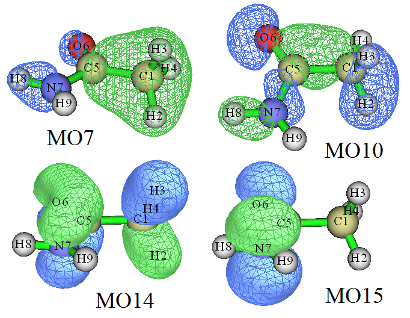
acetylene, the .wfn file was generated at B3LYP/6-31G** level, its geometry was optimized at the same level.
Boot up Multiwfn and input examples\C2H2.wfn
Multiwfn session
- 9 — Bond order analysis
- 10 — Intrinsic bond strength index (IBSI)
- 1 — Start calculation. Since the current input file contains wavefunction information, by default the IBSI to be calculated is IBSIIGMH
2 // Use high-quality integration grid (using "ultrafine grid" will result in marginally better numerical accuracy, while the cost will be correspondingly increased)
The result is
1(C ) 2(H ) Dist: 1.0657 Int(dg_pair): 0.46835 IBSI: 0.72771
1(C ) 3(C ) Dist: 1.2054 Int(dg_pair): 1.27376 IBSI: 1.54718
1(C ) 4(H ) Dist: 2.2711 Int(dg_pair): 0.11093 IBSI: 0.03795
2(H ) 3(C ) Dist: 2.2711 Int(dg_pair): 0.11093 IBSI: 0.03795
2(H ) 4(H ) Dist: 3.3368 Int(dg_pair): 0.01482 IBSI: 0.00235
3(C ) 4(H ) Dist: 1.0657 Int(dg_pair): 0.46835 IBSI: 0.72771
The "Dist" corresponds to distance between the two atoms, the Int(dg_pair) stands for the
\(\int \delta g^{\text{pair}} \mathbf{d}\mathbf{r}\) term in the IBSI expression, the "IBSI" is the IBSIIGMH value.
Next, we calculate IBSIIGM. Choose option "2 Set type of IGM" and then input 1 to change the form of the IBSI to be IBSIIGM, then choose option 1 again and select "high-quality" to carry out the calculation, the result is
1(C ) 2(H ) Dist: 1.0657 Int(dg_pair): 0.58725 IBSI: 0.92620
1(C ) 3(C ) Dist: 1.2054 Int(dg_pair): 1.32387 IBSI: 1.63228
1(C ) 4(H ) Dist: 2.2711 Int(dg_pair): 0.19366 IBSI: 0.06726
2(H ) 3(C ) Dist: 2.2711 Int(dg_pair): 0.19366 IBSI: 0.06726
2(H ) 4(H ) Dist: 3.3368 Int(dg_pair): 0.02242 IBSI: 0.00361
3(C ) 4(H ) Dist: 1.0657 Int(dg_pair): 0.58725 IBSI: 0.92620
Similarly, you can calculate \(\int \delta g^{\text{pair}} \mathbf{d}\mathbf{r}\) and IBSI for ethane and ethene, their .wfn files generated at the same level as the C2H2.wfn have been provided as ethane.wfn and ethene.wfn in "examples" folder. The calculated data of the C-C bond in the three systems are plotted with respect
to their bond dissociation energies (BDEs) in the map below, in which the δgIGM and δgIGMH correspond to the \(\int \delta g^{\text{pair}} \mathbf{d}\mathbf{r}\) calculated in terms of IGM and IGMH, respectively.
As can be seen, \(\delta g^{\mathrm{IGM}}\) does not correlate well with bonding strength, which is directly reflected by BDE. The linear relationship of the two forms of IBSI and \(\delta g^{\mathrm{IGMH}}\) is perfect with respect to BDE, manifesting their great value.
Note that if the input file only contains geometry information, such as .pdb and .xyz, the default IBSI form to be calculated is IBSIIGM.
Strictly speaking, the reference value of IBSI, namely the denominator in the IBSI expression, should be calculated at the same level as current system, however in the present example we directly used the built-in data. You can change it if you hope to obtain more rigorous results, the reference value can also be evaluated using the present function, see Section 3.11.9 for detail.
4.9.11 Example of using AV1245 and AVmin indices to study aromaticity¶
Note: Chinese version of this section is my blog article “Using Multiwfn to calculate the AV1245 index to study the aromaticity of macrocycles” (http://sobereva.com/519).
Please read Section 3.11.10 first to gain basic knowledge about the AV1245 and AVmin indices. In Section 4.9.11.1, AV1245 and AVmin will be employed to distinguish aromaticity between the two kinds of six-membered rings in phenanthrene, then in Section 4.9.11.2, porphyrin will be taken as instance to show the ability of these indices in quantification of aromaticity of large rings.
4.9.11.1 Using AV1245 and AVmin to study local aromaticity of phenanthrene
In Section 4.9.2, MCBO has been used to study the difference in local aromaticity for the two kinds of rings in phenanthrene, whose geometry and atomic numbering are shown below. In this section, we will use AV1245 and AVmin to study it again.
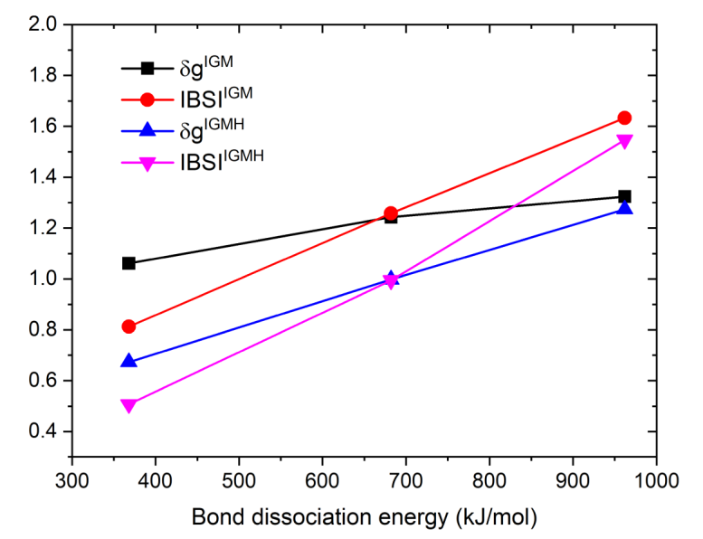
Boot up Multiwfn and input examples\phenanthrene.fch
Multiwfn session
- 9 — Bond order analysis
- 11 — Calculate AV1245
- 1,2,3,4,5,6 — Calculate AV1245 for the boundary six-membered ring. Note that the order of inputting should be in line with connectivity
The result is
4-center electron sharing index of 1 2 4 5: 0.01304820
4-center electron sharing index of 2 3 5 6: 0.01245026
4-center electron sharing index of 3 4 6 1: 0.00801537
4-center electron sharing index of 4 5 1 2: 0.01304820
4-center electron sharing index of 5 6 2 3: 0.01245026
4-center electron sharing index of 6 1 3 4: 0.00801537
AV1245 times 1000 for the selected atoms is 11.17127674
AVmin times 1000 for the selected atoms is 8.015375 ( 3 4 6 1)
Namely 1000AV1245 and 1000AVmin are 11.171 and 8.015, respectively. The AVmin value corresponds to 4c-ESI of 3-4-6-1.
Next, we input 3,4,8,9,10,7 to calculate 1000AV1245 and 1000AVmin for the central ring, the result are 5.012 and 3.996, respectively. Clearly, the boundary ring has stronger aromaticity than the central ring since it has larger AV1245 and AVmin, this conclusion is in line with the MCBO analysis in Section 4.9.2. In the original paper of AV1245, it is argued that AV1245 behaves as an approximation of MCBO.
Calculating AV1245 and AVmin in natural atomic orbital (NAO) basis In Multiwfn, AV1245 and AVmin can also be calculated based on natural atomic orbitals (NAOs), as mentioned in Section 3.11.10. The main advantage of this way is that reasonable result can still be obtained even diffuse functions are presented (while if you calculate AV1245 and AVmin as what we have done earlier when diffuse functions are employed, the result will be quite misleading)
Here we calculate AV1245 and AVmin in NAO basis for the phenanthrene, in this case NBO output information with DMNAO keyword should be employed as input. The Gaussian input file involved in this example is exampes\phenanthrene_DMNAO.gjf, the corresponding output file is examples\phenanthrene_DMNAO.out. As you can see from the .gjf file, the NBO module embedded in Gaussian is invoked and DMNAO keyword is passed into NBO module.
Boot up Multiwfn and input examples\phenanthrene_DMNAO.out
Multiwfn session
- 9 — Bond order analysis
- 11 — Calculate AV1245
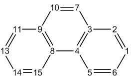
1,2,3,4,5,6 // Calculate AV1245 for the boundary ring The output is
AV1245 times 1000 for the selected atoms is 10.98247818
AVmin times 1000 for the selected atoms is 8.283826 ( 3 4 6 1)
As can be seen, the result are almost identical to those we obtained earlier (11.171 and 8.015), this is expected since currently diffuse functions are not employed.
4.9.11.2 Using AV1245 and AVmin to measure global aromaticity of porphyrin
In this example we use AV1245 and AVmin to quantify aromaticity corresponding to different delocalization paths of porphyrin. The .fch file generated at B3LYP/6-31G* level can be downloaded at http://sobereva.com/multiwfn/extrafiles/porphyrin.rar. The structure is shown below.
There are several possible global delocalization paths around the porphyrin, now we calculate one of them. Although you can manually input atomic indices by tracing atom connectivity as exhibited in the map above, this process is very laborious, especially when the ring under study is large. It is much better to use GaussView to visually select the atoms in the ring of interest and directly extract their indices. To do so, we use GaussView to open the porphyrin.fch, then click the
brush icon , then hold down the left mouse button and let the cursor pass every atom in the
ring, then the atoms will be highlighted as yellow, as shown on the left side of the figure below. After that, choose "Tools" - "Atom Selection", copy out the atom indices from the text box (see below) to clipboard, namely 1,3-4,6-8,10-14,16-19,21-22,24.
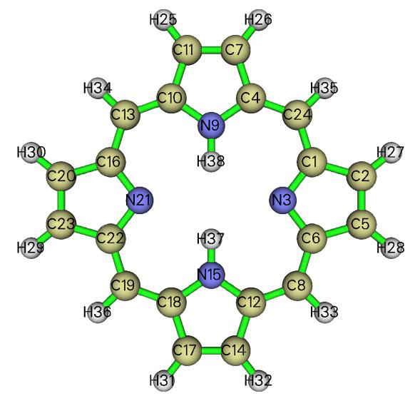
Now boot up Multiwfn and input porphyrin.fch
Multiwfn session
- 9 — Bond order analysis
- 11 — Calculate AV1245 d
1,3-4,6-8,10-14,16-19,21-22,24 // Indices of the atoms in the selected ring Now you can see the following information:
Number of selected atoms: 18
Atomic sequence:
1 3 6 8 12 14 17 18 19 22 21 16
13 10 11 7 4 24
...[ignored]
AV1245 times 1000 for the selected atoms is 2.75856093
AVmin times 1000 for the selected atoms is 1.943425 ( 3 6 12 14)
As you can see, the atomic sequence has been properly recognized, it is fully in line with the actual connectivity in the ring, therefore the result, 2.76, should be meaningful. The AVmin corresponds to N3-C6-C12-C14, implying that this local region is the bottleneck of electron delocalization over the whole path.
Similarly, we calculate AV1245 for other rings by inputting below commands d 1-2,4-8,10-14,16-20,22-24 d 1,3-4,6,8-10,12-13,15-16,18-19,21-22,24 d 1-2,4-6,8-10,12-13,15-16,18-20,22-24 For all calculated rings, the selected atoms as well as results are summarized below, the blue and green texts correspond to 1000AV1245 and 1000AVmin, respectively.
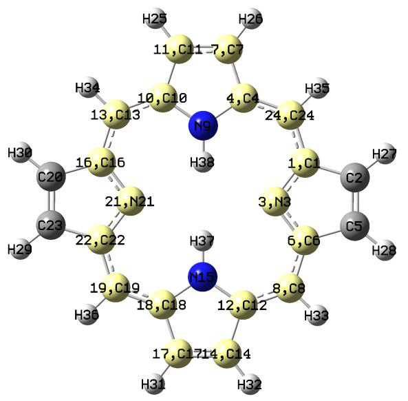
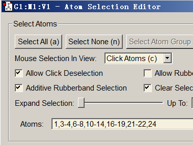
It is unambiguous that the path passing through nitrogen of pyrroles but bypassing N-H group is the most favorable delocalization channel, since its 1000AV1245 and 1000AVmin values (2.76 and 1.94) are both larger than other pathways. It is worth to mention that for the two paths shown at bottom of the map above, although their AV1245 are unequal, their AVmin are exactly identical. This observation suggests that despite average extents of electron delocalization on the two selected paths are notably different, the bottlenecks are the same.
This system has also been studied in Section 4.4.9 via LOL-π, the resulting graph is given below, from which it can be clearly seen that the degree of electron delocalization along different paths is significantly different, the top priority delocalized path is vividly revealed by red or orange color. Obviously the most favorable delocalization path unveiled by AV1245 and AVmin is in good
agreement with that revealed by LOL-π.
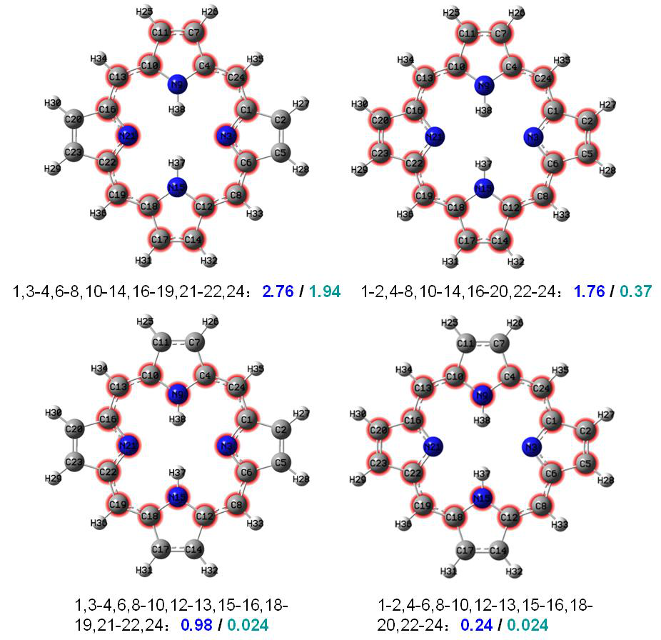